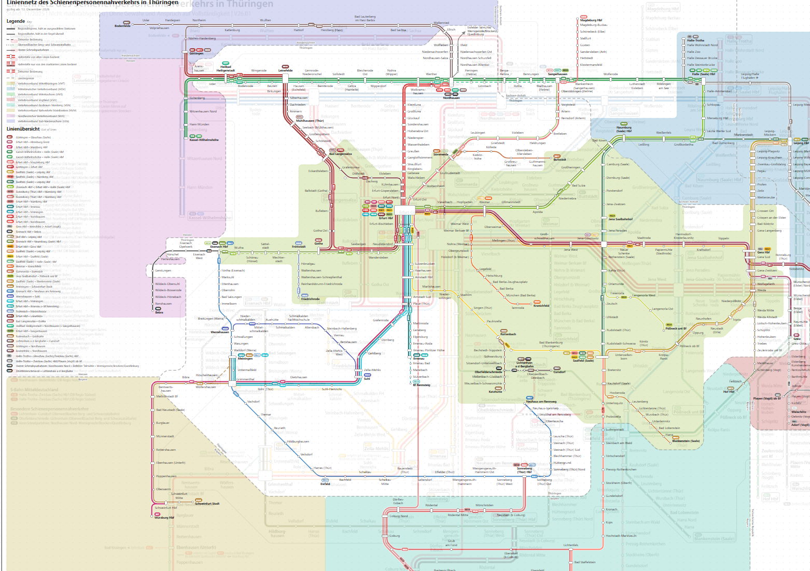

Publisher-Alternative für Liniennetzpläne
Publisher wurde eingestellt, doch deine Netzpläne brauchen weiter ein Werkzeug. So passt der Liniennetz-Editor dazu, was er anders macht und wo seine Grenzen liegen.
Warum eine Alternative nötig wurde
Microsoft Publisher war für viele Hobbyplaner das Werkzeug der Wahl: intuitiv, ausreichend für Netzpläne und ohne den Aufwand eines Profi-Grafikprogramms wie InDesign oder Affinity. Ende Oktober 2026 wurde das Programm eingestellt. Der Liniennetz-Editor ist entstanden, weil sich für genau diese Aufgabe kein passender Ersatz fand.
Der Unterschied: beschreiben statt zeichnen
In einem Zeichenprogramm setzt du Linien, Kreise und Texte einzeln und richtest sie von Hand aus. Der Editor dreht das um:
| Zeichenprogramm | Liniennetz-Editor | |
|---|---|---|
| Ausgangspunkt | Formen und Linien zeichnen | Netz beschreiben: Haltestellen, Linien, Kategorien |
| Verbindungen | von Hand ziehen und ausrichten | automatisch, nur 0°/45°/90° mit runden Knicken |
| Parallele Linien | einzeln nebeneinander legen | automatisch gebündelt, Reihenfolge einstellbar |
| Legende | von Hand bauen und pflegen | entsteht aus dem Netz |
| Änderung einer Haltestelle | Teile einzeln nachziehen | verschieben, Verbindungen folgen |
Das Ergebnis ist ein einheitlicher Plan im modernen Look, und Änderungen am Netz kosten Sekunden statt Stunden.
Was der Editor kann
- Linien mit Stamm, Ästen und Ringschluss, mehrere Kategorien (z. B. häufig und selten bedient)
- Haltestellen mit Durchfahrt, Richtungshalt, zeitweiser Bedienung und aufgesplitteten Standorten
- Linienbadges, Legende und Linienübersicht
- Flüsse, Grenzen und Flächen als Zeichenobjekte, dazu freie Texte und Bilder
- Textvorlagen und Entwürfe zum Speichern und Wiederverwenden
- Export als SVG, PNG und PDF
Was er nicht kann
- Keine Publisher-Dateien öffnen. Es gibt keinen Import von
.pub-Dateien. Dein Netz baust du neu auf, siehe unten. - Kein beliebiges Layout. Linien verlaufen nur in 0°-, 45°- und 90°-Strecken auf dem Raster. Zeichenobjekte wie Flüsse lassen sich freier führen.
- Kein Desktop-Programm. Der Editor ist eine Web-Anwendung und läuft im Browser.
- Kein allgemeines Grafikprogramm. Für Werbegrafiken oder Fotomontagen ist er nicht gedacht.
So steigst du um
- Alten Plan als Vorlage nutzen. Exportiere deinen Publisher-Plan als Bild und lege ihn über Start › Hintergrundbild… blass hinter das Raster. Er dient als Pause und erscheint nicht im Export.
- Haltestellen übernehmen. Lege sie an oder importiere sie per CSV (Kopfzeile
Name;Spalte;Zeile). - Linien zuordnen. Reihenfolge der Halte festlegen, Farben und Kategorien wählen.
- Entwurf anpassen. Schrift, Linienstärken und Symbole entsprechend deinem bisherigen Stil einstellen und als Entwurf speichern.

Eine ausführliche Schritt-für-Schritt-Erklärung findest du in der Anleitung.
Deine Daten bleiben bei dir
Der Editor läuft vollständig im Browser, es gibt kein Konto und keinen Server, der deine Pläne sieht. Projekte liegen als JSON-Datei auf deinem Rechner. Exportierte SVG-Dateien kannst du in jedem Vektorprogramm weiterbearbeiten. Der Quellcode steht unter MIT-Lizenz auf GitHub.